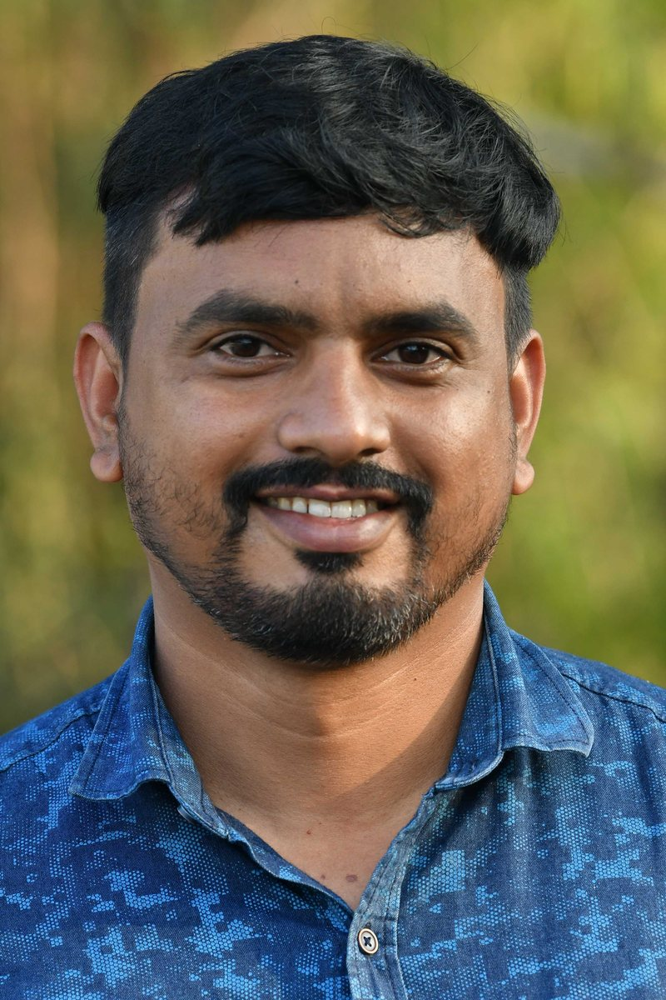
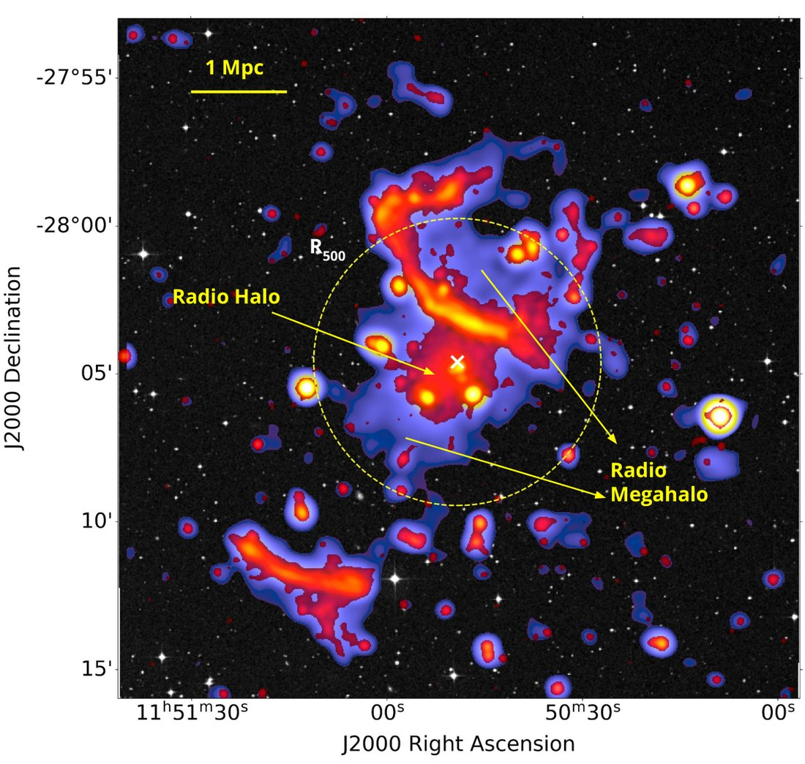
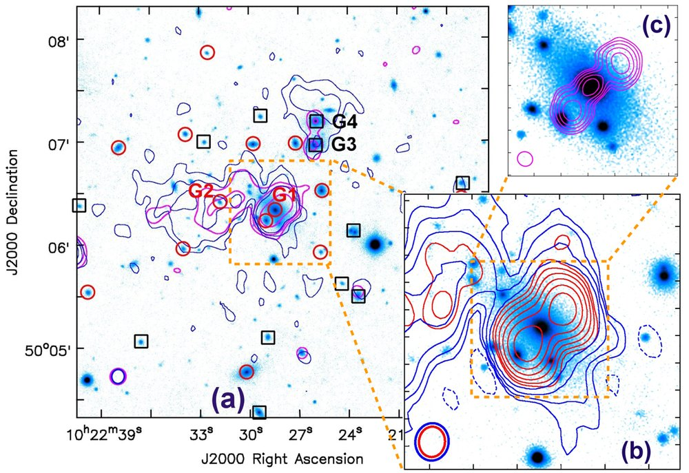
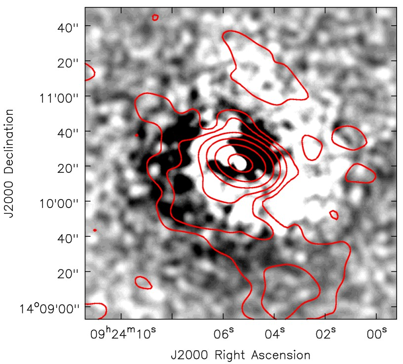
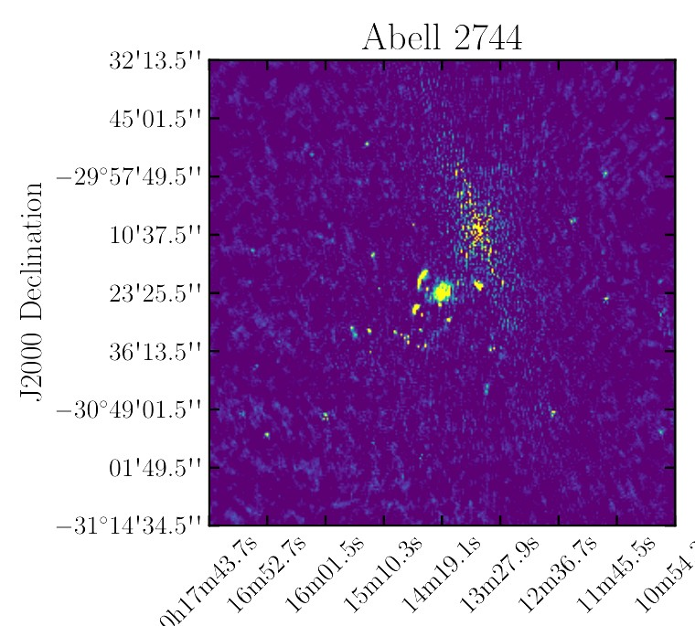
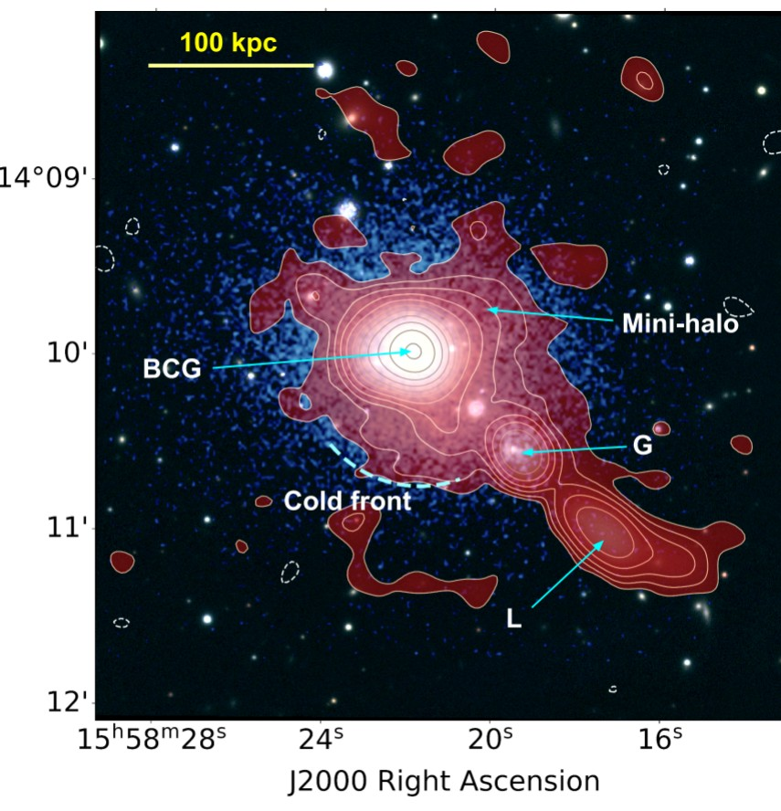
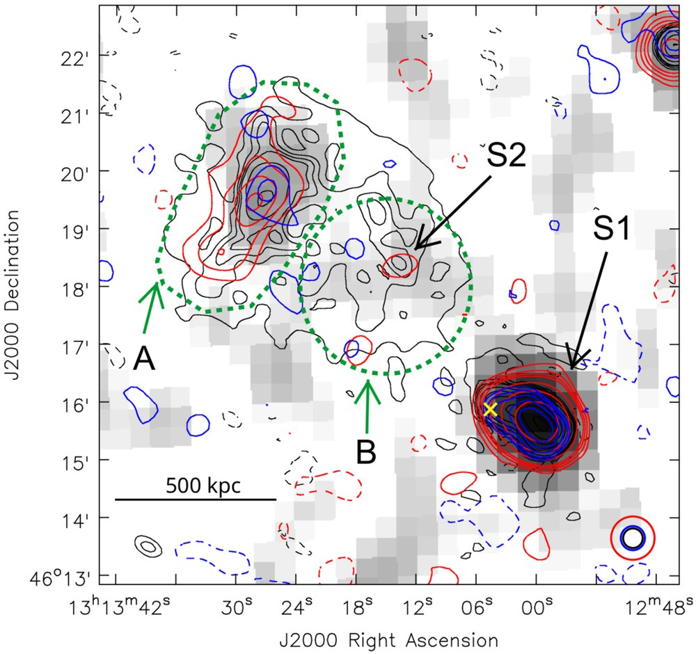
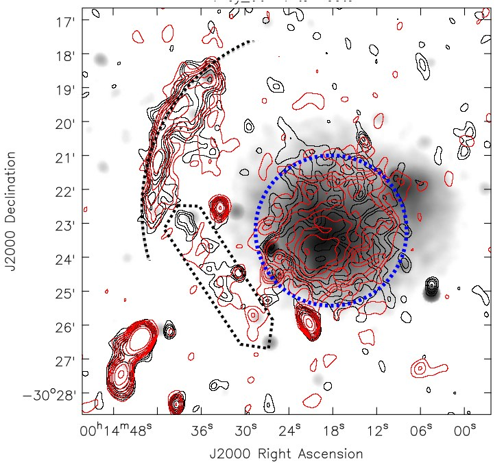

I'm an Assistant Professor at MIT Art, Design and Technology University, Pune, specializing in radio astronomy with focus on galaxy clusters, intracluster medium, radio galaxies, and large-scale structures in the universe.
Get In TouchHello! I'm Sameer, an astrophysicist focused on radio astronomy and the study of galaxy clusters. I received my Ph.D. in Physics from Savitribai Phule Pune University with a thesis titled "Unravelling the Unseen Matter in the Universe through Radio Emission from Low Mass Galaxy Clusters" under the supervision of Dr. Surajit Paul.
Currently working as an Assistant Professor in the School of Computing at MIT Art, Design and Technology University (MIT ADT), Pune, India. Previously, I was a Post Doctoral Fellow at the National Centre for Radio Astrophysics - Tata Institute of Fundamental Research (NCRA-TIFR), Pune (2023-2026). My research involves using radio observations to study diffuse emission in galaxy clusters, which provides insights into cosmic magnetism and particle acceleration processes in the universe.
I have extensive experience with radio astronomical techniques and data analysis using tools like CASA, AIPS, SPAM pipeline, and WSCLEAN. I'm passionate about uncovering the mysteries of the universe's large-scale structures through observation and analysis.

Using radio telescopes like uGMRT and JVLA to study cosmic phenomena. Specializing in observational techniques for detecting faint diffuse radio emission from galaxy clusters and large-scale structures.
Investigating the properties and evolution of galaxy clusters, with particular focus on low-mass clusters. Studying diffuse radio features like halos, relics, and mini-halos to understand the physics of intracluster medium.
Exploring radio galaxies, their morphology and evolution. Studying the connection between large-scale cosmic structures and the radio emission they produce, providing insights into the magnetized cosmic web.
School of Computing, MIT Art, Design and Technology University (MIT ADT), Pune, India
National Centre for Radio Astrophysics - Tata Institute of Fundamental Research (NCRA-TIFR), Pune, India
Institute of Information Technology (IOIT), All India Shri Shivaji Memorial Society (AISSMS), Pune, India
Department of Physics (Post Graduate Section), Annasaheb Magar College, Hadapsar, India
Savitribai Phule Pune University, Pune
Thesis: "Unravelling the Unseen Matter in the Universe through Radio Emission from Low Mass Galaxy Clusters"
Supervisor: Dr. Surajit Paul

uGMRT radio image of the megahalo in galaxy cluster PLCKG287.0+32.9 (Salunkhe et al. 2025, ApJL)
Multi-band radio-optical overlay of Abell 980: GMRT and VLA radio contours over a Pan-STARRS optical image (Salunkhe et al. 2022, A&A)
Residual X-ray image of Abell 795 with GMRT 325 MHz radio contours, revealing the sloshing spiral structure (Kadam et al. 2024, MNRAS)
GMRT 610 MHz total intensity map of the galaxy cluster Abell 2744 (Pal et al. 2026, ApJ)
Colour composite of RXCJ1558.3-1410: Pan-STARRS optical with Chandra X-ray (blue) and uGMRT radio (red), showing the mini-halo and cold front (Kale et al. 2026, MNRAS)
GMRT radio contours over the X-ray emission of Abell 1697, showing the relic and diffuse trail (Paul et al. 2020, A&A)
GMRT radio contours over the diffuse X-ray emission of a MACS cluster field (Paul et al. 2019, MNRAS)Successful observing proposals as Principal Investigator and Co-Investigator:
Regular speaker at astronomy clubs and science festivals, making complex astrophysical concepts accessible to the public.
Contributing to popular science publications and podcast appearances to discuss latest developments in astronomy.
Mentoring undergraduate and graduate students interested in pursuing careers in astrophysics and space science.
I'm always open to discussing research collaborations, speaking opportunities, or answering questions about my work. Feel free to reach out!